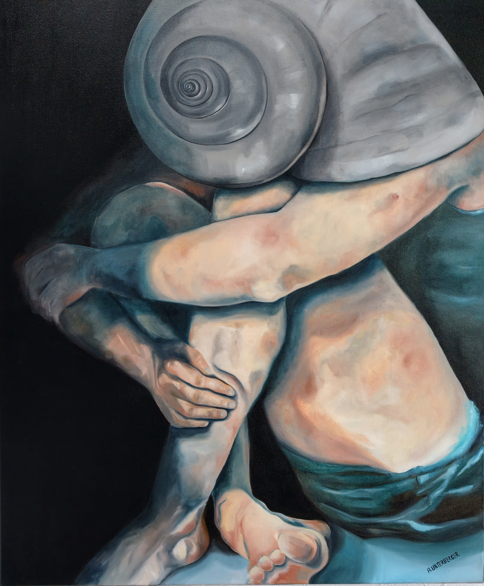

Öl auf Leinwand · 140 × 100 × 4,5 cm · 2022
Preis: € 4.300
Eine Figur zieht sich in sich selbst zurück. Die Arme umschließen den Körper, die Haltung wirkt zugleich schutzsuchend und angespannt. An die Stelle des Kopfes tritt ein großes Schneckenhaus - ein Bild für den Wunsch, sich zu verbergen und die eigene Grenze zu sichern. Doch Rückzug bedeutet hier nicht nur Flucht. Er kann auch ein notwendiger Schritt sein: Abstand gewinnen, zur Ruhe kommen, sich vor den Zugriffen der Außenwelt schützen. Das dunkle Umfeld verstärkt die Isolation der Figur und lenkt den Blick auf ihre Verletzlichkeit. So fragt das Bild, wo Selbstschutz endet und Einsamkeit beginnt.
A figure retreats into itself. Its arms embrace the body, while the posture appears both protective and tense. In place of the head is a large snail shell—an image of the desire to hide and safeguard one’s personal boundaries. Yet retreat does not signify escape alone. It can also be a necessary step: gaining distance, finding calm, and protecting oneself from the pressures of the outside world. The dark surroundings intensify the figure’s isolation and draw attention to its vulnerability. In this way, the work asks where self-protection ends and loneliness begins.